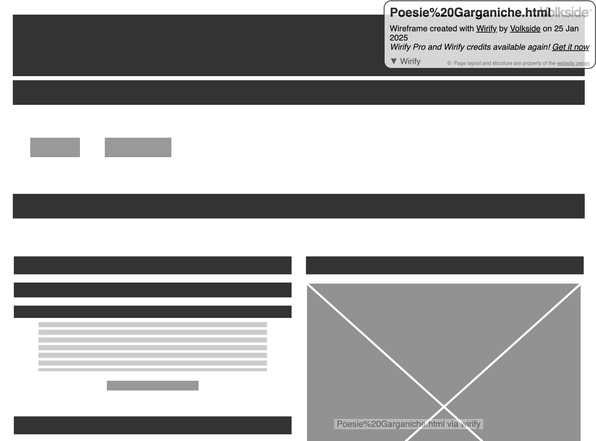
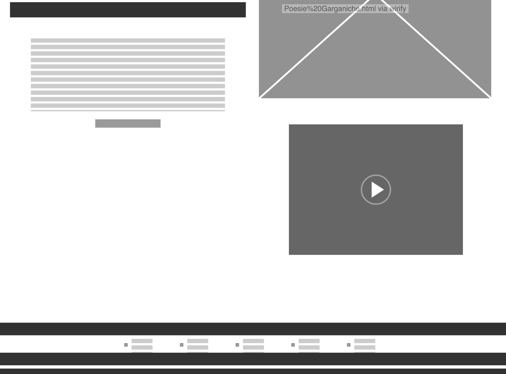
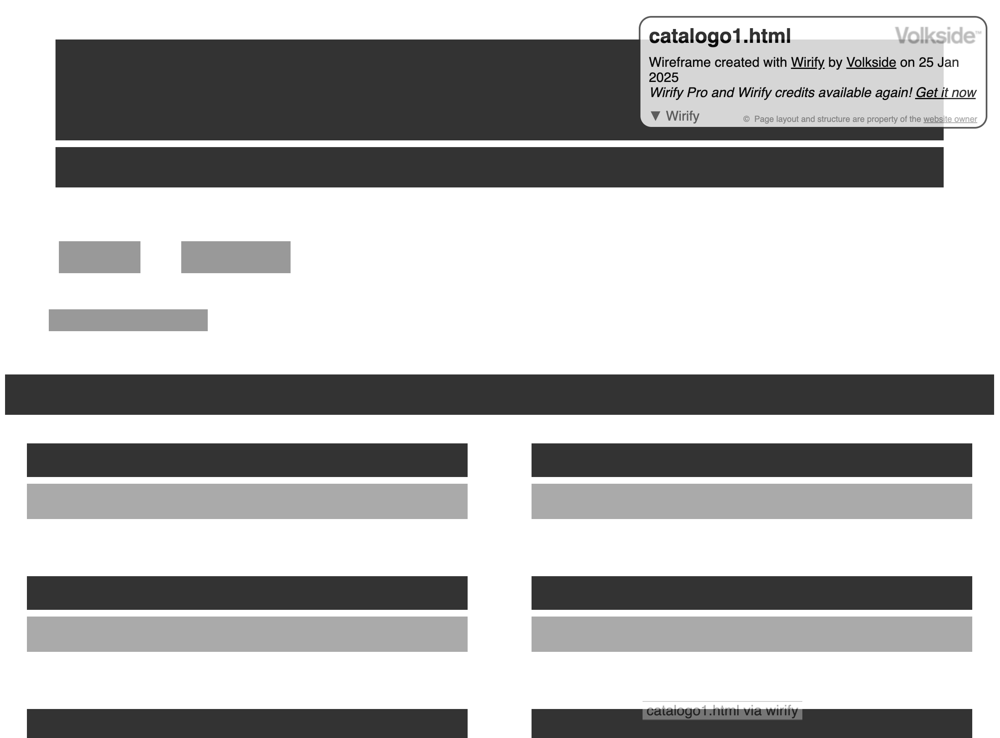
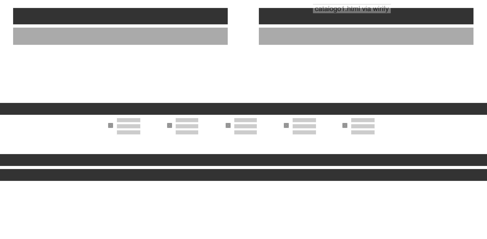
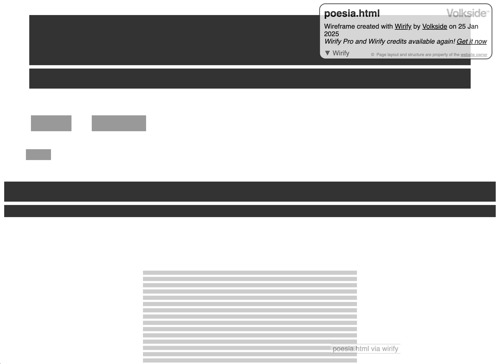
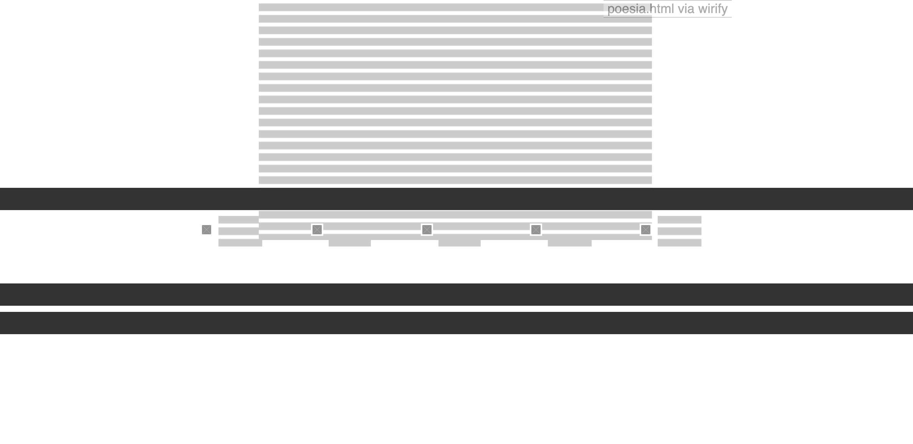

Il Web Project Plan
1) Idea-Brief
1.1) Finalità e obiettivi del progetto
Il sito di Raccolta delle poesie Garganiche è elaborato al fine di offrire una raccolta organica di poesie locali, divise in base al paese di provenienza, così che il fruitore possa attingerne in maniera semplice e gratuita, e detenere una conoscenza in merito a componimenti poetici pugliesi.
1.2) Target Audience
Il progetto si rivolge a chiunque abbia un interesse in merito a queste poesie locali. Il range di età è molto vasto, comprendendo le fasce d’età tra i 16 e i 60 anni.
1.3) Accesso
Il progetto è accessibile da una vasta gamma di dispositivi, inclusi smartphone, tablet e computer desktop e offre immagini, testi relativi alle singole poesie (item), e descrizione del contesto di nascita.
1.4) Contenuti e dati
Essendo un sito web riguardante una realtà locale non vasta, i contenuti non sono disponibili online. Infatti per la creazione di questo progetto ho fatto riferimento alla trasmissione orale dei testi, che ho poi personalmente trascritto nei vari dialetti. La componente innovativa è proprio questa, ovvero il fatto che non siano presenti siti che raccolgono organicamente le poesie.
2) Benchmark
La presenta di altri siti web incentrati sulla raccolta organica di poesie Garganiche scarseggia; tuttavia sono presenti progetti differenti, che si concentrano ad esempio su un poeta in particolare, come GarganoVerde che presenta una raccolta di poesie di Joseph Tusiani (poeta di San Marco in Lamis). O come Wordpress, che attraverso la ricerca della parola chiave, mostra tutti i pochi risultati presenti in merito alla produzione poetica, che per la maggior parte sono saggi. Il mio progetto si presenta come una rielaborazione di questi due siti web, poiché permette di esplorare la poesia di tutto il territorio, senza alcun tipo di selettività.
3) Struttura
3.1) Mappa concettuale

3.2) Schema delle dipendenze

Partendo dalla home page, che presenta un esempio di poesia esemplificata con il paese di riferimento, attraverso il della navbar si giunge alla pagina che rappresenta il secondo livello del sito: dal “catalogo”, infatti, è possibile osservare la pagina dove sono raccolti i vari item, suddivise in base al paese di nascita. Inoltre, sia dalla HomePage, che dal catalogo, è possibile ottenere la pagina dell'Item, dove è presente il testo completo della poesia presentata in precedenza
4) Layout
4.1) La home page
Nell’header è presente il nome del sito web, seguito da un sottotitolo che esemplifica perfettamente l’obiettivo del sito. Nella navbar è presente il collegamento tra Home Page e Catalogo; inoltre vi è anche il servizio di accesso e iscrizione al sito, che tuttavia è inattivo. Il corpo del sito web presenta una tabella che permette di dividerlo in due parti: in una è presente lo slide show con le foto riguardanti il tema trattato, che dona chiarezza e immediatezza anche a livello visivo, e un frame che mostra la mappa del luogo, attraverso un collegamento con google maps; a sinistra, invece, vi è il testo con la poesia, che presenta la possibilità di continuare a leggerla in un’altra pagina; e vi è subito dopo un rimando ad un item, attraverso l’apertura di una pagina Wikipedia. Nel Footer, infine, vi sono le informazioni di metanavigazione, come il copyright, il link di riferimento per il Web Project Plan e la possibilità di condivisione sui social.
4.2) La pagina del catalogo
Nella pagina del Catalogo, l’Header, la navbar e il footer sono speculari a quelli della Homepage; si differenzia solo per la presenza delle breadcrumbs che mostrano il percorso seguito dall’utente dalla pagina iniziale fino a quella corrente. Il corpo del sito web presenta un titolo centrale. Contiene delle tabelle con 5 item in ognuno, definiti dai numeri, che presentano dei link momentaneamente inattivi che rimandano ad ogni poesia. .
4.4) La pagina dell’item
Il corpo si differenzia per la presenza di una tabella che mostra il testo completo della poesia mostrata nella Home Page. L’Header, il Footer e Navbar rimangono invariate rispetto alle precedenti. Le Breadcrumbs in questo caso rimandano sia alla home, che al catalogo.
5) Norme di usabilità
5.1) Architettura d’interfaccia, layout e scrittura
Rispetta regole generali della programmazione. L’Header e il Footer rimangono uguali per tutte le pagine, così che l’utente possa sempre orientarsi all’interno del sito Web. Per quanto riguarda invece lo stile, si è preferito rimanere minimalisti, con lo sfondo chiaro, che vuole mirare a rappresentare la semplicità; l’utilizzo degli altri colori come il marrone invece vuole dare un senso di distacco elegante rispetto al colore dello sfondo. Il font utilizzato (Italic) aggiunge enfasi al testo, mantenendo un equilibrio tra leggibilità e raffinatezza.
6) Servizi
6.1) Strumenti di browsing
- Breadcrumps
- Navbar
- Slieshow
- Indici
6.2) Strumenti di interazione
- Navbar
- Tables
- Slideshow
- Link ipertestuali
- Buttons
- Cards
- Modali
- Di particolare rilevanza è anche la presenza della mappa interattiva con Google Maps, che ha lo scopo di espandere l’esperienza poetica garganica, oltre i confini geografici tradizionali, consentendo a chi non è direttamente collegato a questo territorio, di scoprirne e apprezzarne il legame tra poesia e luogo. In questo modo il fruitore può non solo leggere la poesia, ma esplorare visivamente il contesto geografico.
6.3) Sviluppi
La demo attuale del sito potrebbe beneficiare di alcuni sviluppi, come ad esempio la creazione di un blog, che permetterebbe di sviluppare contenuti aggiuntivi da parte degli utenti, come recensioni o riflessioni personali. Inoltre sicuramente sarebbe interessante una suddivisione in sezione tematica, dove ogni poesia potrebbe essere collegata ad un grande nucleo tematico che ne migliorerebbero la fruizione. Un altro sviluppo potrebbe essere l’inclusione di approfondimenti critici e contestuali, come note esplicative e analisi dei vari testi; o addirittura una traduzione in italiano, considerando che siano tutte scritte nei dialetti di appartenenza.
7) Bibliografia e riferimenti sitografici
- Francesca Tomasi, Metodologie informatiche e discipline umanistiche, 2008
- Francesca Tomasi, Organizzare la conoscenza: Digital Humanities e Web semantico. Un percorso tra archivi, biblioteche e musei, 2022
- Francesca Tomasi, slide del corso di Informatica Umanistica, a.a. 2024-2025
- Wikipedia
- FontAwesome
- W3School
- Bootstrap
- Mural (per la creazione delle mappe concettuali)
- FontAwesome per le icone